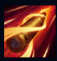
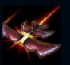
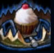
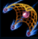
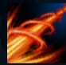

Caitlyn
| Caitlyn The Sheriff Of Piltover | |
|---|---|
| Release date | 04.01.2011 |
| Class | Marksman |
| Positions | Bottom |
| Resource | Mana |
| Range type | Ranged |
| Adaptive type | Physical |
| Base statistics | |||
| Health | 510 – 2091 | Mana | 313.7 – 908.7 |
| Health regen. | 3.5 – 12.85 |
Mana regen. | 7.4 – 16.75 |
| Armor | 28 – 87.5 | Attack damage | 62 – 110.96 |
| Magic resist. | 30 – 38.5 | Crit. damage | 175% |
| Move. speed | 325 | Attack range | 650 |
Fiind cel mai de seamă ofițer al Piltoverului, Caitlyn e cea mai bună șansă pe care forțele de ordine o au pentru a prinde criminalii din oraș. Lucrează deseori alături de Vi, acționând ca o contragreutate rece și rațională a personalității partenerei sale năvalnice. Chiar dacă are o pușcă hextech unică, cea mai puternică armă a lui Caitlyn rămâne inteligența ei deosebită, care-i permite să întindă capcane complexe în care prinde toți răufăcătorii care îndrăznesc să-și facă de cap în Orașul Progresului. |  |
PUNCT OCHIT, PUNCT LOVIT La fiecare câteva atacuri de bază sau împotriva unei ținte prinse în capcană sau în plasă, Caitlyn trage un glonț în capul adversarului, provocând daune bonus care cresc în funcție de șansele de lovitură critică. Împotriva țintelor prinse în capcană sau în plasă, raza de atac a abilității ''Punct ochit, punct lovit'' se dublează. |
||
|---|---|---|---|---|
 |
CONCILIATORUL DIN PILTOVER Caitlyn își armează pușca timp de 1 secundă, după care lansează un glonț care provoacă daune fizice (țintele de după cea dintâi primesc daune reduse). |
|||
 |
CAPCANĂ YORDLE Caitlyn pune o capcană pentru a prinde yordelii buclucași. La declanșare, capcana dezvăluie și imobilizează campionii inamici timp de 1,5 secunde, oferindu-i lui Caitlyn o lovitură ''Punct ochit, punct lovit'' îmbunătățită. |
|||
|  |
PLASĂ DE CALIBRU 90 Caitlyn aruncă o plasă grea asupra țintei pentru a o încetini. Reculul o împinge în spate. |
|||
 |
AS ÎN MÂNECĂ Caitlyn țintește cu mare grijă și apoi provoacă daune masive unei singure ținte de la o distanță uriașă. Campionii inamici pot intercepta glonțul care îl vizează pe aliatul lor. |